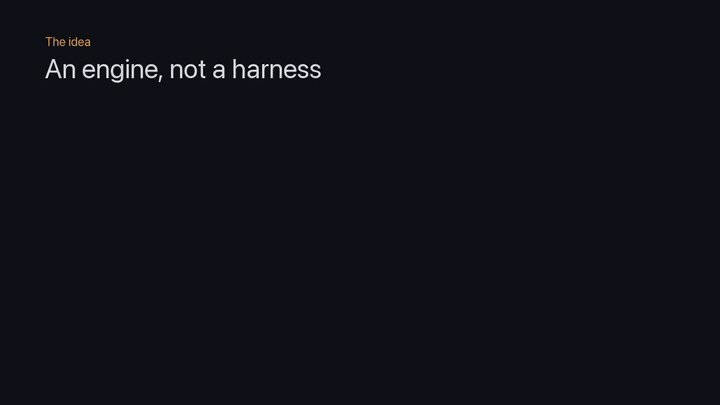

Currently building
kritaka-agent · Rust + Python · active
kritaka-agent 🦀🤖
A small AI agent engine, not a harness. A Rust core owns the state machine and the rules, Python handles IO through PyO3, and a 3B model runs locally on my laptop through Ollama. It uses no agent framework. I wanted to know what actually happens inside one.
- Agent states as Rust enums. An invalid state doesn't compile.
- Think → act → observe loop on local Llama 3.2 3B with tool calling.
- Safe tools: an AST-based calculator with no
eval(), and a UTC clock. - JSONL trace of every run, step by step, so I can see why it acted.
- Deterministic tests: a scripted model replays recorded conversations.
- CI from day one: rustfmt, clippy
-D warnings, cargo test and pytest. Design decisions are recorded as ADRs.
Roadmap
nextSans-IO engine: Rust owns the loop, Python only does IO
plannedTool registry and evaluation harness
plannedMemory and observation compression
laterMy own inference engine: tokenizer, GGUF, attention

kritaka-agent walkthrough
Rust
PyO3
maturin
Python
Ollama
ReAct
State machine
Deterministic testing